Team member winning the First Prize of the GaTech SURE Program
Data: Summer 2016
Location: GaTech, Atlanta
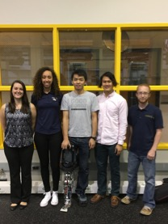 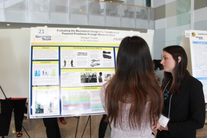
5th anniversary of the NRI at DC
Date: June 9 2016
Location: DC
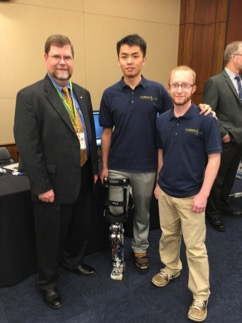 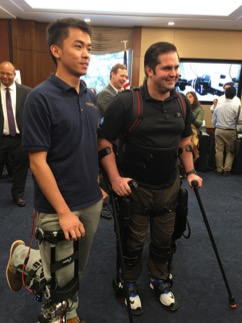
Dynamics walking on DURUS at the 2015 DARPA Robot Challenge (DRC) Finals
Date: June 5-6 2015
Location: Fairpelx, Pomona, CA
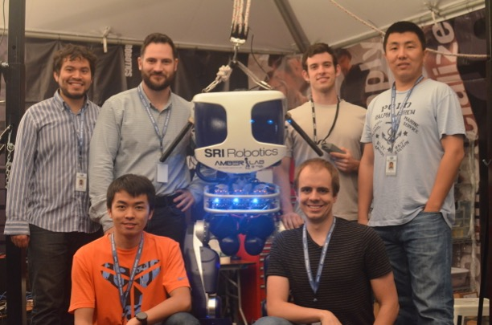
The live-demo of AMPRO2 (debut of AMPRO2) at the demonstration session of Hybrid Systems: Computation and Control (HSCC) Conference 2015
Date: Apr. 14 2015
Location: Seattle Washington State Convention Center, Seattle, WA
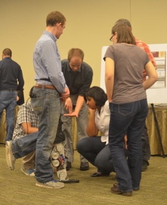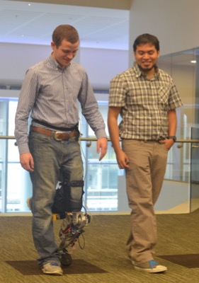
A live-demo of AMPRO was given during the launch keynote presentation at the Annual Dual Conference in Innovation and Automation 2014.
Date: Oct. 3rd 2014
Location: Gilruth Center, NASA/JSC
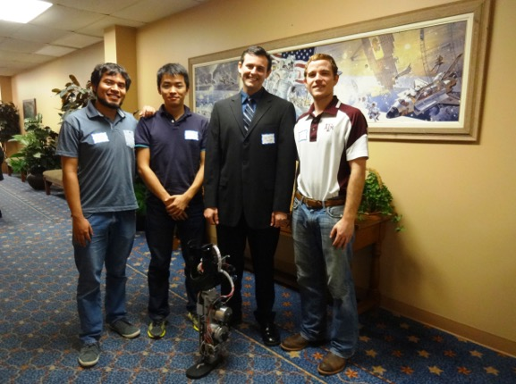
A labmate walked with AMPRO for 1 mile continuously with the non-linear human-inspired control infrastructure.
Date: Oct. 17 2014
Location: Student Recreation Center, Texas A&M University
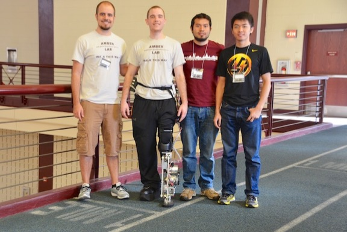
AMBER Lab and multi-contact walking of AMBER2 are on Daily Planet TV Show on Discovery Channel Canada
Date: Jan. 27 2014
Location: AMBER Lab, Texas A&M University
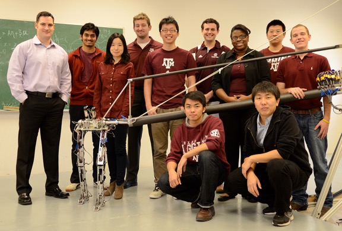
Workshop of AMBER2 in 20th annual NIWeek
Date: Aug. 4 - 7 2013
Location: Austin Convention Center, Austin
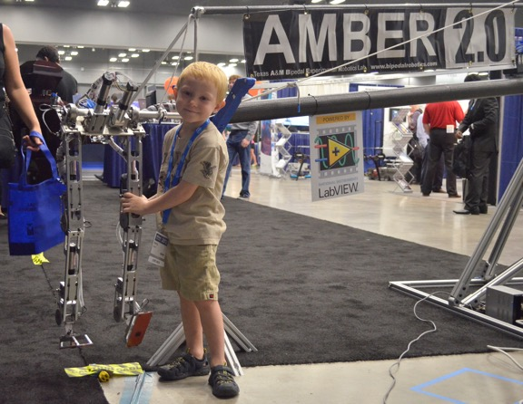